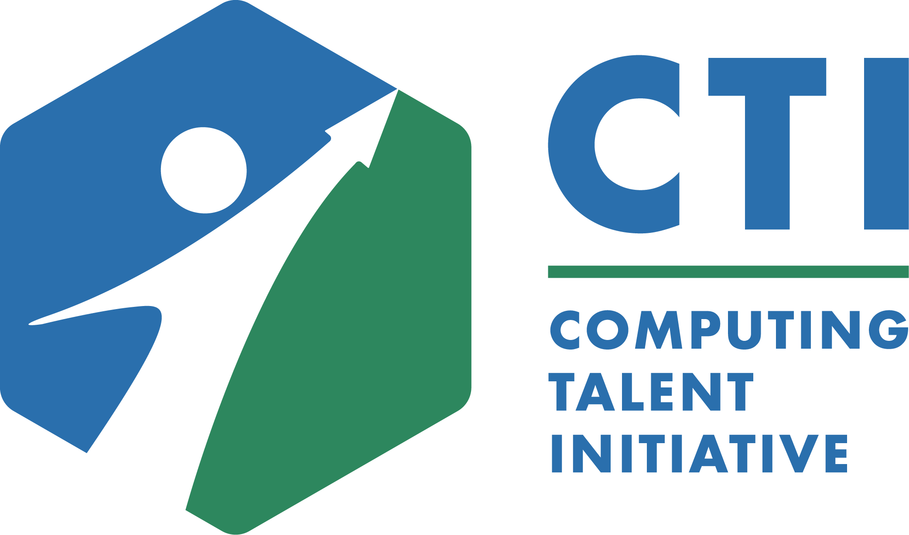

⚠ This job board and the connection data were built by Claude (Cowork) — there could be errors. Please review the information carefully before acting on it.
CTI · Warm-Path Job Board
374 entry-level & new-grad openings across 26 companies — each one a place where the CTI network can make a connection for you.
Updated 2026-06-29 · Computing Talent Initiative

How this works Goal: Give you at least one warm introduction, with a request to look at your resume for a particular job. Hope: While we can't guarantee any outcome, our hope is that you'll get noticed through this opportunity. How: You earn this by demonstrating your work ethic — completing your Career Intelligence activities at a high quality and going through a 1:1 check-in interview with the team.
▶ Watch this message
×
Almost there. Warm introductions are reserved for students who've completed their CI activities and 1:1 interview. Once you've met the bar, use the button below and we'll make the connection.
Built for CTI students. Postings refresh weekly; always verify the role is still open on LinkedIn. Warm-path contacts are from Prof. Narayanan's network — introductions are made personally.